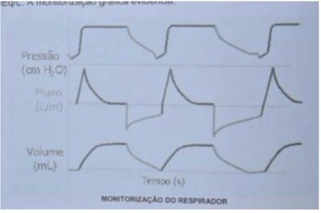

Questão 1 · Exames de imagem · Critérios diagnósticos · Introdução e f isiopatologia · 4000116324Em relação à Síndrome da Angústia Respiratória Aguda (SARA) podemos afirmar que:
A Seu quadro é de instalação rápida caracterizado por dispneia intensa, hipoxemia e infiltrados pulmonares difusos
B A lesão pulmonar ocorre de maneira direta na sepse
C A SARA é definida em duas categorias de acordo com o grau de hipoxemia
D Sua incidência anual é de 100 casos por 100000 habitantes.
E Dos pacientes admitidos em UTI somente 10% reúnem os critérios para SARA
Questão 2 · Sequência Rápida de Intubação SRI · Via Aérea Def initiva · Cirurgia · 4000107233A intubação em ""sequência rápida"" é uma estratégia em serviço de emergência para prevenir aspiração em paciente sem jejum ou de tempo de jejum desconhecido. Como é feita?
A Administração de um bloqueador neuromuscular, intubação e administração de um agente indutor.
B Ventilação com máscara até saturação superior a 95% e intubação.
C Administração de um agente indutor, manobra de Sellick para evitar bloqueio neuromuscular e intubação pelo membro mais experiente da equipe.
D Administração de um agente indutor seguido de um bloqueador neuromuscular e intubação.
Questão 3 · Manobra de Sellick · 4000105931A Pressão cricoide pode prevenir o re uxo gástrico durante a IOT, mas deve ser realizada com cautela, podendo di cultar o procedimento. Podemos aceitar quanto à manobra que:
A O papel da pressão cricoide, durante a PCR, não foi estudado, e seu uso rotineiro, portanto, não é recomendado.
B O papel da pressão cricoide, durante a PCR, não foi estudado, e seu uso rotineiro, portanto, é recomendado.
C O papel da pressão cricoide, durante a PCR, foi estudado, e seu uso rotineiro sempre é recomendado.
D O papel da descompressão cricoide, durante a PCR, não foi estudado, e seu uso rotineiro, portanto, não é recomendado.
Questão 4 · Cânula nasof aríngea · Cânula orof aríngea · Cânulas f aríngeas · 4000105889O uso da Cânula nasofaríngea pode ser indicado em pacientes despertos ou com reflexo de tosse presente. O item correto é:
A O tamanho adequado não é obtido pela distância entre a parte distal da asa do nariz e a proximal no trago da orelha. Na suspeita de fratura de base de crânio ou uma coagulopatia severa, está contraindicada.
B O tamanho adequado é obtido pela distância entre a parte distal da asa do nariz e a proximal no trago da orelha. Na suspeita de fratura de base de crânio ou uma coagulopatia severa, está contraindicada.
C O tamanho adequado é obtido pela distância entre a parte distal da asa do nariz e a distal no trago da orelha. Na suspeita de fratura de base de crânio ou uma coagulopatia severa, está contraindicada.
D O tamanho adequado é obtido pela distância entre a parte distal da asa do nariz e a proximal no trago da orelha. Na suspeita de fratura de base de crânio ou uma coagulopatia severa, não está contraindicada.
Questão 5 · Ventilação mecânica · Doenças obstrutivas · Indicações de internação em UTI · 4000096098Em adultos portadores de pneumopatia obstrutiva (asma e / ou DPOC) quando em franca insu ciência respiratória deveram ter os seguintes cuidados iniciais no seu tratamento respiratório, exceto:
A Intubar de preferência com tubo ≥ 8 mm de diâmetro.
B Ventilar em modalidade a pressão ou volume controlado (PCV ou VCV).
C Menor fração inspiratória de oxigênio para manter SpO2 ≥ 92 % e PaO2 ≥ 65 mmHg.
D Frequência respiratória inicial de 8 a 12 por minuto.
E Manter uma relação inspiração x expiração de 1 para 1.
Questão 6 · Modos convencionais de Ventilação Mecânica · Indicações de Ventilação Mecânica · 4000096003Ventilação Não Invasiva VNI A ventilação mecânica não invasiva pode utilizar uma pressão inspiratória (IPAP e ou PSV) e uma pressão positiva expiratória (EPAP e ou PEEP), tendo como principal (is) finalidades.
A IPAP: Manter os alvéolos abertos; EPAP: Ventilar adequadamente.
B IPAP: Ventilar adequadamente e manter os alvéolos abertos; EPAP: Melhora das trocas gasosas e ventilar adequadamente.
C IPAP: Ventilar adequadamente; EPAP: Manter os alvéolos abertos e Melhora das trocas gasosas.
D IPAP: Redução do trabalho respiratório e manter os alvéolos abertos; EPAP: Ventilar adequadamente.
E IPAP: Aumento do trabalho respiratório e manter os alvéolos abertos; EPAP: Ventilar adequadamente.
Questão 7 · Exames de imagem · Ventilação Não Invasiva VNI · Outros tratamentos · 4000083424Em relação à Síndrome da Angústia Respiratória Aguda (SARA), é INCORRETO afirmar que:
A Entre os critérios diagnósticos, está a imagem radiológica pulmonar, evidenciandoinfiltrados pulmonares difusos bilateralmente.
B A posição prona melhora a hipoxemia em alguns pacientes, pois permite orecrutamento em algumas áreas que não ventilam.
C A ventilação mecânica não invasiva é uma contraindicação aos pacientes com SARA.
D A ventilação com auxílio de membrana extracorpórea (ECMO) é indicada para os pacientes que não tiveram melhora da hipoxemia com ventilação mecânica.
Questão 8 · Fibrose Cística · Diagnóstico · Etiologia · 4000072748Um rapaz de 22 anos de idade com história de brose cística apresentou quadro de tosse seguido por hemoptise volumosa (sangue vivo). Qual o provável sítio de sangramento?
A Capilares alveolares.
B Artérias brônquicas.
C Varizes esofageanas.
D Artéria pulmonar.
E Veias pulmonares.
Questão 9 · Exacerbação Aguda da DPOC EADPOC · Acidose respiratória crônica · 4000067855Insuf iciência respiratória aguda Tipo II Paciente idosa, 71 anos, tabagismo > 35 maços/ano, fez uso de diazepam e clorpromazina para dormir em sua casa. Evoluiu na manhã seguinte com muita sonolência, rebaixamento do nível de consciência, com esforço respiratório por obstrução da via aérea por queda do mento. Foi solicitado uma gasometria arterial. Qual dos parâmetros abaixo é mais compatível com o quadro da paciente ?
A pH=7,42, pCO2=22, pO2=80, HCO3=18
B pH=7,50, pCO2=20, pO2=82, HCO3=23
C pH=7,20, pCO2=65, pO2=50, HCO3=32
D pH=7,10, pCO2=40, pO2=65, HCO3=10
E pH=7,55, pCO2=38, pO2=65, HCO3=35
Questão 10 · Classif icação de Mallampati · Classif icação de Mallampati · 4000062889Segundo a classificação de Mallampati, o paciente classificado como grau III, expõe:
A Palato duro.
B Palato duro, palato mole e base da úvula.
C Palato duro, palato mole, úvula e fauces.
D Palato duro, palato mole, úvula, fauces e pilares.
Questão 11 · Modos convencionais de Ventilação Mecânica · Indicações de Ventilação Mecânica · Diagnostico · 4000061798Paciente masculino, 55 anos de idade, altura 1,70 m, peso real 80 kg, peso predito 66 kg, sem comorbidades, apresentou pneumonia comunitária, evoluiu com sepse e insu ciência respiratória com necessidade de intubação traqueal e ventilação mecânica. Sobre a regulagem inicial do ventilador mecânico invasivo para o paciente, assinale a alternativa correta.
A Modo ventilação pressão de suporte (PSV) com volume corrente de 264 mL.
B Modo ventilação pressão controlada (PCV) com volume corrente de 480 mL.
C Modo ventilação pressão controlada (PCV) com volume corrente de 640 mL.
D Modo ventilação volume controlado (VCV) com volume corrente de 396 mL.
E Modo ventilação volume controlado (VCV) com volume corrente de 528 mL.
Questão 12 · Insuf iciência respiratória aguda Tipo II · Diagnostico · Ventilação mecânica · 4000061394Homem de 38 anos, 70 Kg, internado há 7 dias para tratamento de pancreatite aguda. Há 1 dia, apresentou piora do estado geral, dispneia, taquicardia, evoluindo com insu ciência respiratória e necessidade de intubação orotraqueal e foi encaminhado à UTI. Parâmetros da ventilação mecânica: FiO2 = 60%, VC = 410 mL, FR = 13 rpm, PEEP = 8 cm H2O. Gasometria arterial: pH = 7,30, pO2 = 63 mmHg, pCO2 = 50 mmHg, Bic = 28 mmol/L, BE = 3,0. O diagnóstico de entrada na UTI é
A Síndrome do desconforto respiratório agudo moderada.
B Lesão pulmonar aguda.
C Pneumonia aspirativa.
D Síndrome do desconforto respiratório agudo grave.
Questão 13 · Classif icação de Cormack Lehane · 4000039655A classificação de Cormack-Lehane tipo III, durante a laringoscopia direta para intubação orotraqueal com laringoscópio convencional, corresponde à visualização.
A apenas da epiglote.
B apenas da base da língua e palato mole.
C das aritenoides e da porção posterior das cordas vocais.
D total das estruturas da glote.
Questão 14 · Pneumologia · Critérios diagnósticos · Introdução e f isiopatologia · 4000037000Qual a principal causa indireta de Síndrome do Desconforto Respiratório Agudo em adultos?
A Sepse.
B Pancreatite.
C Politrauma grave.
D Transfusão de hemoderivados.
E Bypass cardiopulmonar.
Questão 15 · Pneumologia · Critérios diagnósticos · Introdução e f isiopatologia · 4000036990Sobre a Síndrome do Desconforto Respiratório Agudo, é correto afirmar que
A um dos critérios essenciais para o diagnóstico inclui a mensuração da Pressão Venosa Central (PVC).
B o tratamento envolve sempre a intubação orotraqueal e a ventilação mecânica invasiva.
C quando classificada como grave, o uso de corticoide em doses altas é obrigatório.
D parte do suporte clínico envolve manutenção de balanço hídrico negativo após as primeiras 24-48 horas do atendimento inicial.
E quando diagnosticada, indica a presença de pneumonia.
Questão 16 · Capnograf ia · Capnograf ia · 4000003393Das alternativas abaixo, qual o recurso faz detecção precoce de intubação esofágica?
A Capnografia.
B Lactato arterial.
C Lactato sérico.
D Radiografia de tórax.
Questão 17 · Ventilação Não Invasiva VNI · Ventilação Não Invasiva VNI · 4000111283São indicações de uso de ventilação mecânica não invasiva, exceto:
A DPOC exacerbado.
B Edema pulmonar de origem cardiogênica.
C Cuidados paliativos.
D Rebaixamento do nível de consciência.
Questão 18 · Modos convencionais de Ventilação Mecânica · Novos Modos de Ventilação Mecânica · 4000106160Doenças obstrutivas Escolar de 8 anos com crise aguda de asma grave necessita ser intubado e é colocado em ventilação mecânica invasiva com a seguinte con guração inicial: Ventilação Mandatória Intermitente Sincronizada (SIMV), pressão controlada, FiO₂ 100%, frequência respiratória 25/min, tempo inspiratório 0,8 s, relação inspiração/expiração 1:2, pressão inspiratória de pico 20 cmH₂O (volume corrente exalado 8 ml/kg), pressão expiratória positiva no nal da expiração (PEEP) 5 cmH₂O, sensibilidade -2 cmH₂O. A gasometria arterial coletada 30 minutos após mostrar pH 7,20, PO₂ 120 mmHg, PCO₂ 60 mmHg, HCO₃ 27 mEq/L. A monitorização gráfica evidencia: Qual é o ajuste indicado na configuração do ventilador?

A Aumentar a frequência respiratória para 30/min.
B Reduzir a frequência respiratória para 20/min.
C Aumentar a PEEP para 7 cmH₂O.
D Aumentar o tempo inspiratório para 1s.
Questão 19 · Via aérea dif ícil · Via Aérea Def initiva · Cirurgia · 4000099510Uma via aérea definitiva implica na colocação de um tubo endotraqueal com balão insu ado abaixo das cordas vocais, devidamente xado e conectado a um sistema de ventilação assistida com uma mistura enriquecida com oxigênio. Em relação a adoção de uma via aérea definitiva em um paciente politraumatizado. Marque a alternativa correta:
A A máscara laríngea que permite a intubação (MLI) é um dispositivo usado para se obter uma via aérea definitiva, que é necessário um treinamento adequado, não sendo necessário ser substituída por um tubo endotraqueal.
B A intubação nasotraqueal as cegas, após se afastar fratura de base de crânio no exame de tomografia computadorizada, pode ser usada principalmente em pacientes em apneia.
C Os fatores determinantes importantes na escolha entre realizar uma intubação orotraqueal ou nasotraqueal é a escala de coma de Glasgow do paciente, a fratura de mandíbula e ferimentos da língua.
D A incapacidade de intubar um paciente, garantir uma via aérea temporária ou estabelecer uma via aérea cirúrgica resulta em hipóxia. A realização da cricotireoidostomia por punção e insuflação de oxigênio pode fornecer tempo necessários para se estabelecer uma via aérea definitiva.
E A traqueostomia é preferível a cricotireoidostomia cirúrgica no paciente politraumatizado com insuficiência respiratória na emergência pois tem maior chance de se introduzir um tubo endotraqueal definitivo ou uma cânula, apresentando melhor suporte ventilatório.
Questão 20 · Ventilação Não Invasiva VNI · Ventilação Não Invasiva VNI · 4000096912A Ventilação mecânica não invasiva está contraindicada na seguinte situação:
A Asma e DPOC
B Edema agudo de pulmão
C Parada cardíaca ou respiratória
D SARA leve
E Pós-extubação em UTI
Questão 21 · Insuf iciência respiratória aguda · Prétratamento · Preparação · 4000069255Paciente de 42 anos, sem comorbidades prévias conhecidas, é admitida na sala vermelha do pronto atendimento de urgência com quadro de disúria, polaciúria e desconforto hipogástrico há 7 dias, tendo evoluído com dor lombar, febre alta, náuseas e vômitos há 48 horas. No momento apresenta-se torporosa, PA 84 x 52 mmHg, FC 106 bpm, SpO2 74% com O2 suplementar sob máscara com reservatório. Seu preceptor opta pela sequência rápida de intubação e escolhe o melhor fármaco dentre as opções disponíveis abaixo para a sedação. Qual foi o escolhido?
A Quetamina.
B Midazolam.
C Propofol.
D Dexmedetomidina.
Questão 22 · Prétratamento · Sequência Rápida de Intubação SRI · Insuf iciência adrenal primária · 4000041297Paciente cardiopata, com doença de Addison e insu ciência renal aguda com hipercalemia evolui com insu ciência respiratória e necessita de via aérea definitiva. A melhor escolha de medicamentos para intubação orotraqueal consiste em:
A succinil colina.
B etomidato.
C rocuronio.
D propofol.
Questão 23 · Sequência Rápida de Intubação SRI · Via Aérea Def initiva · Cirurgia · 4000035693Para Intubação endotraqueal em serviços de urgência, podemos apenas CONCORDAR com o item:
A Uma vez indicada a necessidade de intubação endotraqueal e de suporte ventilatório, a opção pela não utilização de drogas em sequência rápida para o estabelecimento da via aérea tem se mostrado segura e deve ser preferencialmente adotada no adulto.
B Uma vez indicada a necessidade de intubação endotraqueal e de suporte ventilatório, a opção pela utilização de drogas em sequência rápida para o estabelecimento da via aérea tem se mostrado insegura e deve ser preferencialmente adotada no adulto.
C Uma vez indicada a necessidade de intubação endotraqueal e de suporte ventilatório, a opção pela utilização de drogas em sequência rápida para o estabelecimento da via aérea tem se mostrado segura e não deve ser preferencialmente adotada no adulto.
D Uma vez indicada a necessidade de intubação endotraqueal e de suporte ventilatório, a opção pela utilização de drogas em sequência rápida para o estabelecimento da via aérea tem se mostrado segura e deve ser preferencialmente adotada no adulto.
Questão 24 · Outros tratamentos · Ventilação protetora · 4000031456Assinale a terapia abaixo que é nível de evidência A para tratamento de síndrome de desconforto respiratório agudo (SDRA):
A Uso de corticoide.
B Uso de ventilação prona.
C Manobra de recrutamento alveolar.
D Ventilação mecânica com baixo volume corrente.
Questão 25 · Indicações de Ventilação Mecânica · Intubação traqueal · Posicionamento do tubo orotraqueal · 4000023842Assinale a alternativa INCORRETA com relação à intubação endotraqueal.
A O doente com escore de escala de coma de Glasgow igual ou inferior a 8 exige intubação imediata.
B Os fatores determinantes mais importantes na escolha entre realizar uma intubação orotraqueal ou nasotraqueal são a experiência do médico e a presença de ventilação espontânea do doente.
C Se o doente estiver em apneia, a intubação orotraqueal é indicada em detrimento da intubação nasotraqueal.
D A intubação nasotraqueal às cegas não exige que o doente apresente ventilação espontânea.
Questão 26 · Classif icação de Cormack Lehane · Laringoscopia direta · 4000023454Leia o caso clínico a seguir. Paciente do sexo feminino, de 45 anos, com 94 kg, 1,65 m de altura. Antecedentes pessoais de tabagismo 15 anos/maço. Será submetida à colecistectomia por vídeo, sob anestesia geral. Ao exame físico da via aérea, apresentou à inspeção pescoço curto e alargado e foi classificada como Mallampati II. No dia do procedimento, após monitorização e venóclise, foi realizada indução de anestesia e à laringoscopia direta para intubação foi classificada pela Classificação de Cormack-Lehane modificada por Cook como Classe 2B. Isso indica que, à laringoscopia direta:
A A maior parte das pregas vocais foi visualizada e a intubação será fácil.
B As cartilagens aritenoides foram visualizadas e a intubação poderá apresentar nível de dificuldade moderado. Sugere-se a utilização de guia (Bougie) para facilitar o procedimento.
C As cartilagens aritenoides foram visualizadas e a intubação será difícil. Sugere-se a interrupção do procedimento para posterior tentativa com fibroscópio flexível ou videolaringoscopia.
D As estruturas anatômicas da via aérea não foram visualizadas, e a intubação deverá ser realizada com laringoscópio convencional.
Questão 27 · Sequência Rápida de Intubação SRI · Pneumologia · 4000011826Assinale a alternativa que representa uma situação em que a sequência rápida de intubação esteja indicada:
A Paciente em parada cardiorrespiratória.
B Pacientes em coma profundo.
C Pacientes em broncoespasmo.
D Recém-nascidos com síndrome do desconforto respiratório.
Questão 28 · Modos convencionais de Ventilação Mecânica · Novos Modos de Ventilação Mecânica · 4000118107Ventilação Não Invasiva VNI qual dos modos de ventilação mecânica é disparado exclusivamente pelo paciente?
A PSV
B VCV
C PCV
D SIMV
Questão 29 · Ventilação protetora · 4000104599A Síndrome do Desconforto Respiratório Agudo (ARDS) se caracteriza por edema pulmonar agudo de origem inflamatória cujas causas podem ser agressões diretas ao pulmão ou indiretas. Contusão pulmonar é uma das causas associadas com o desenvolvimento de ARDS de origem direta. Escolha a alternativa que representa a maneira mais adequada atualmente de ventilar o paciente com ARDS nas primeiras 72 horas de evolução:
A Modo controlado, a volume ou pressão, volume corrente de 3-6ml/kg (peso predito),Pressão de platô menor ou igual a 30 cm H20, Pressão de distensão menor ou igual a 15 mmHg, evitar PEEP menor que 5cm H2O.
B Modo assisto-controlado, volume corrente de 8ml/kg (peso predito), Pressão de Platômenor que 35cm H2O, Driving Pressure menor ou igual a 20 mmHg, PEEP decremental.
C Modo Pressão de Suporte, volume corrente de 6ml/kg (peso predito), Pressão de Platômenor ou igual 30 cm H2O, FiO2 suficiente para manter saturação de oxigênio maior que 93% , PEEP decremental.
D Modo SIMV, volume corrente entre 4-6 ml/kg (peso predito), PEEP de 5 a 10 cmH2O, Pressão Inspiratória Máxima menor que 50 cmH2O, Fluxo 60-100L/min.
Questão 30 · Exames de imagem · Critérios diagnósticos · Introdução e f isiopatologia · 4000094273Paciente com SARA (Síndrome da Angustia Respiratória Aguda) grave. Quanto aos critérios necessários na sua definição. Qual a resposta correta:
A Tempo de inicio: aparecimento súbito dentro de uma semana após exposição ao fator de risco;
B Hipoxemia : relação PaO2 / FiO2 "menor ou igual a" 100 com PEEP "maior ou igual a" 5;
C Anormalidades radiológicas: opacidades bilaterais não explicadas por nódulos, derrames ou colapsos lobares/ pulmonares
D Insuficiência respiratória não explicada por insuficiência cardiáca ou sobrecarga vôlemica
E Todos os itens estão corretos
Questão 31 · Suporte básico da via aérea · Cuidados com a via aérea · Pneumologia Intensiva · 4000066376Levando em consideração os preditores de di culdade de ventilação sob máscara, assinale a alternativa que apresenta o maior risco.
A Paciente com 70 anos, usuário de prótese dentária.
B Paciente com 30 anos e história de apneia do sono.
C Paciente com IMC > 26 kg.m-² e falta de dentes.
D Paciente com 150 kg e 80 anos.
E Paciente com 70 anos e acromegálico.
Questão 32 · Supraglóticos · Via aérea dif ícil · Laringoscopia Indireta · 4000059939Em relação a intubação traqueal, é CORRETO afirmar que:
A Só pode ser realizada utilizando laringoscópio.
B Pode ser realizada utilizando máscara laríngea em algumas situações.
C A intubação nasotraqueal nunca necessita do uso de laringoscópio para sua realização.
D O videolaringoscopio deve ser usado somente em casos de intubação difícil, em urgências.
E O tubo endotraqueal deve ter o menor diâmetro possível.
Questão 33 · Insuf iciência respiratória aguda Tipo II · Farmacológico · Quadro clínico · 4000059820Paciente masculino, 64 anos, com diagnóstico prévio de Doença Pulmonar Obstrutiva Crônica - DPOC de etiologia tabágica, é admitido no Pronto Atendimento por quadro de tosse produtiva e dispneia em repouso. Sua avaliação inicial na sala de emergência mostra agitação psicomotora, frequência respiratória 28 mrpm, frequência cardíaca 96 bpm, pressão arterial 150x90 mmHg, saturação arterial de O2 na oximetria 89%, ausculta pulmonar com murmúrio vesicular diminuído globalmente, presença de sibilos expiratório difusos, estertores bolhosos bilaterais e presença de tiragem supraclavicular. São iniciadas medidas para tratamento de exacerbação aguda do DPOC e após 30 minutos o paciente encontra-se oscilando períodos de agitação e sonolência, mantem taquipneia e taquicardia, ausculta pulmonar ainda com sibilos difusos e presença de tiragem supraclavicular e intercostal, saturação arterial de O2 92% com cateter nasal a 2 L/min, gasometria arterial coletada neste momento mostra pH 7,21, PaCO2 70 mmHg, PaO2 62 mmHg, HCO3 29,5 mEq/L, saturação 92%. Qual o diagnóstico e a conduta neste momento?
A Paciente com quadro de insuficiência respiratória aguda hipercápnica associada a alteração de consciência. Proceder com sedação, intubação orotraqueal e ventilação mecânica.
B Paciente com quadro de insuficiência respiratória aguda hipercápnica associada a alteração de consciência. Administrar ansiolítico para controle de agitação psicomotora e iniciar ventilação não invasiva.
C Paciente com quadro de insuficiência respiratória aguda hipoxêmica associada a alteração de consciência. Como a saturação e a PaO2 estão adequadas, manter medidas para broncoespasmo até melhora clínica.
D Paciente com quadro de insuficiência respiratória aguda hipoxêmica associada a alteração de consciência. Iniciar ventilação não invasiva para melhor controle de broncoespasmo e da hipercapnia.
Questão 34 · Ventilação protetora · 4000053357São estratégias de ventilação mecânica protetora na SARA, EXCETO
A a pressão de Platô abaixo de 30 cmH2O.
B manter uma Fração Inspirada de O2 (FiO2) abaixo de 60% objetivando-se saturação maior que 90%.
C o modo ventilatório controlado a volume,
D o volume corrente baixo (<6 ml/Kg de peso predito).
E a utilização de PEEP.
Questão 35 · Modos convencionais de Ventilação Mecânica · Ventilação mecânica · Conceitos · 4000045337Um paciente previamente hígido, hospitalizado por sepse grave de foco pulmonar, em ventilação mecânica controlada por pressão com FiO₂ = 0,8, FR = 12 irpm com PEEP = 5cmH₂O e relação I:E = 1:2, realizou a seguinte gasometria: pH = 7,06, pCO₂ = 28, pO₂ = 82 e Bic = 3,6. Com relação ao caso, é correto afirmar que:
A a redução da frequência respiratória pode ser efetiva no controle da alteração acido-básica
B nesse caso, não há necessidade de aumento da PEEP, tendo em vista pO2 adequada
C está indicada a administração de bicarbonato intravenoso, com objetivo de pH "maior que" 7,2
D considerando a pO2, o paciente apresenta boa troca gasosa
E espera-se que o ânion-gap não esteja elevado
Questão 36 · Prétratamento · Pós intubação · Proteção e posicionamento do paciente · 4000041420Em relação a Intubação Orotraquial - IOT a sequência do procedimento mais correta é:
A pré-oxigenação, midazolam, fentanil e succinilcolina.
B fentanil, midazolam e pancurônio.
C pré–oxigenação, fentanil, midazolam e succinilcolina.
D succinilcolina, fentanil ,midazolam e controle da saturação de O2.
E pré-oxigenação, Etomidato, tramadol e pancurônio.
Questão 37 · Ventilação mecânica · Ventilação protetora · Complicações da Ventilação Mecânica · 4000041377A ventilação mecânica está relacionada a várias complicações se não feita de forma adequada, entre as quais, barotrauma,volutrauma, atelectrauma. Para minimizar tais complicações deve-se:
A usar volume corrente elevado para evitar atelectasia.
B manter pressão alveolar abaixo de 30 cm de H2O.
C não permitir hipercapnia permissiva.
D manter sempre a FIO2 acima de 60% para melhorar a oxigenação.
E sempre usar o modo de ventilação com pressão controlada.
Questão 38 · Fisiologia · Insuf iciência respiratória aguda Tipo II · Diagnostico · 4000039464Em relação aos mecanismos que levam à insuficiência respiratória aguda, assinale a alternativa INCORRETA.
A O efeito shunt é definido como a perfusão de unidades alveolares não ventiladas.
B Alterações difusionais na barreira alveolocapilar são muito comuns como causa isolada de hipoxemia numa situação de emergência.
C Distúrbio entre a ventilação alveolar e a perfusão capilar (V/Q) é a causa mais comum de hipoxemia.
D Hipoventilação leva a aumento da pressão arterial de CO2 (PaCO2 ) e aumento da pressão alveolar de CO2 (PACO2), com consequente queda na PAO2 e na PaO2 .
Questão 39 · Exames de imagem · Critérios diagnósticos · Introdução e f isiopatologia · 4000036471Paciente vítima de politraumatismo grave associado a hematoma intraparenquimatoso cerebral frontal de tratamento conservador e contusão pulmonar associado à broncoaspiração. No segundo dia de internação evoluiu com a seguinte gasometria arterial: pH = 7,34; PaO2 = 100; PaCO2 = 29; HCO3 = 16; SaO2 = 97; com FiO2 de 70%, RX de tórax com opacidades intersticial e alveolar bilaterais. Sobre esse quadro, é CORRETO afirmar que é sugestivo de:
A Síndrome do Desconforto Respiratório Agudo Leve.
B Síndrome do Desconforto Respiratório Agudo moderado.
C Síndrome do Desconforto Respiratório Agudo grave.
D Hemotórax Maciço e requer Toracotomia exploradora.
Questão 40 · Ventilação Não Invasiva VNI · Ventilação Não Invasiva VNI · Outros tratamentos · 4000025848Assinale a alternativa correta sobre o uso de Ventilação Não Invasiva (VNI) na SARA (Síndrome da Angustia Respiratória Aguda):
A Recomenda-se utilizar VNI em SARA leve, moderada e grave, pois será pelo menos uma chance que o paciente terá para evitar a ventilação invasiva
B Recomenda-se utilizar a VNI nos casos de SARA Leve e Moderada, com os cuidados de se observar as metas de sucesso de 1 a 3 horas. No caso de não sucesso inicial insistir por mais 2 horas, postergando-se a intubação
C Recomenda-se evitar utilizar VNI apenas na SARA grave (PaO2/FiO2 < 100 sob PEEP ''maior ou igual'' 5 cm H2O).
D Recomenda-se utilizar a VNI nos casos de SARA Leve, com os cuidados de se observar as metas de sucesso de 0,5 a 2 horas. No caso de insucesso proceder à intubação imediata.
Questão 41 · Ventilação Não Invasiva VNI · Ventilação Não Invasiva VNI · Ventilação Não Invasiva VNI domiciliar · 4000023795A ventilação não-invasiva está contra-indicada na seguinte situação:
A síndrome do desconforto respiratório do adulto.
B DPOC exacerbada complicada por hipercapnia.
C edema pulmonar cardiogênico.
D insuficiência respiratória aguda hipoxêmica.
Questão 42 · Ventilação Não Invasiva VNI · Ventilação Não Invasiva VNI · Ventilação Não Invasiva VNI domiciliar · 4000021729Segundo a versão mais atual da Diretriz Brasileira de Ventilação Mecânica, são contraindicações relativas à Ventilação Não Invasiva (VNI), EXCETO:
A Anastomose de esôfago recente.
B Obstrução de vias aéreas superiores.
C Rebaixamento do nível da consciência em DPOC.
D Parada respiratória.
Questão 43 · Manejo · Diagnóstico · Tratamento · 4000021511Com relação à Hemoptise Maciça, assinale a alternativa INCORRETA:
A Pode ser definida como perda maior que 500-600mL de sangue proveniente dos pulmões em 24 horas
B A atual taxa de mortalidade é de aproximadamente 13% e está mais relacionada com a exsanguinação do que a asfixia.
C O diagnóstico e o tratamento da hemoptise maciça caracteristicamente incluem radiografia de tórax e broncoscopia rígida de emergência.
D As principais causas de hemoptise maciça são a tuberculose, bronquiectasia e câncer.
Questão 44 · Tuberculose pulmonar secundária · Quadro clínico · Etiologia · 4000108676T.A.V, sexo masculino, 25 anos, chega no seu plantão no pronto socorro de cirurgia geral com queixas de escarros hemoptoicos há 2 semanas. Refere que nos últimos meses teve mais de 4 quadros de infecções pulmonares, tratadas corretamente. Nega etilismo e tabagismo. Apresenta-se em REG, PA: 110 x 70 mmHg, exame cardiovascular sem alterações. Antes mesmo de iniciar o exame do aparelho respiratório, já é possível pensar nos seguintes diagnósticos diferenciais, EXCETO:
A Tuberculose.
B Corpo estranho.
C Bronquiectasia.
D Carcinoma broncogênico.
E Carcinoide pulmonar.
Questão 45 · Indicações de intubação · Trauma Crânio Encef álico TCE · Suporte avançado de via aérea · 4000096531Paciente vítima de acidente automobilístico, politraumatizado, com traumatismo crâneo encefálico dá entrada na UTI em respiração espontânea em ar ambiente com nível de consciência com Escala de Glasgow 7, com hipoxemia. Qual sua melhor conduta?
A Máscara de venturi a 50%.
B Ventilação mecânica não invasiva.
C Intubação e ventilação mecânica invasiva em SIMV.
D Intubação e ventilação mecânica invasiva em PCV.
E Máscara de oxigênio de Hudson a 60%.
Questão 46 · Ventilação mecânica · Complicações da Ventilação Mecânica · 4000057012Qual é o principal fator associado à Lesão Pulmonar da Ventilação Mecânica?
A Lesão causada pelo excesso de oxigênio.
B Lesão causada pelo volume corrente alto.
C Lesão causada pelo recrutamento.
D Lesão causada pela PEEP.
Questão 47 · Exames de imagem · Critérios diagnósticos · Introdução e f isiopatologia · 4000057006Em relação à definição da Síndrome do Desconforto Respiratório Agudo (SDRA), é CORRETO afirmar que:
A o tempo de desenvolvimento da síndrome é menor do que sete dias do insulto inicial.
B o padrão dos raios X de tórax é infiltrado difuso, sem considerar a mudança radiológica.
C a relação PaO2/FiO2 é menor que 300, independente da PEEP.
D a ecocardiografia (ECO) é fundamental, nesse caso, para descartar a hipertensão pulmonar.
Questão 48 · Modos convencionais de Ventilação Mecânica · Conceitos · 4000051785A ventilação mecânica invasiva caracteriza-se pela administração de pressão positiva intermitente ao sistema respiratório por meio de prótese traqueal. Sobre a ventilação mecânica invasiva, assinale a alternativa CORRETA:
A A ciclagem do ventilador é representada pelo início da fase inspiratória.
B Define-se a PEEP como a manutenção da pressão alveolar ao final da inspiração.
C No modo assistido-controlado, não há participação do paciente no início da respiração.
D Na modalidade de pressão de suporte, o disparo é realizado pelo ventilador.
E Na ventilação mandatória intermitente sincronizada, poderão ocorrer ciclos controlados, assistidos ou espontâneos.
Questão 49 · Critérios diagnósticos · Introdução e f isiopatologia · 4000039344As causas mais frequentes de Síndrome de Angústia Respiratória Aguda (SARA) são:
A Apneia do sono e doença coronariana.
B Edema pulmonar cardiogênico.
C Estenose Mitral com hemorragia alveolar.
D Sepse, pneumonia e aspiração de conteúdo gástrico.
Questão 50 · Modos convencionais de Ventilação Mecânica · Conceitos · 4000003684“A pressão de pico inspiratório reflete pressão _____________e a pressão de platô reflete a pressão ______________.” Marque a opção em que os termos preenchem, CORRETA e RESPECTIVAMENTE, as lacunas.
A De insuflação pulmonar / da via aérea.
B De via aérea / expiratória.
C De via aérea / intra-alveolar.
D Média granspleural / de abertura dos alvéolos.
Questão 51 · Manejo · Diagnóstico · Tratamento · 4000023675Quanto à hemoptise, assinale a alternativa correta.
A Na indicação cirúrgica da hemoptise maciça, a embolização das artérias brônquicas, como medida inicial diminui a morbidade e mortalidade comparada aos submetidos à cirurgia sem embolização.
B A investigação inicia-se com broncoscopia rígida seguida de arteriografia brônquica.
C A principal causa de morte é a repercussão circulatória, sendo a asfixia a 2ª causa.
D As hemoptises ditas criptogênicas são as principais causas de hemoptise no Brasil.
E Quanto ao volume eliminado, é considerado hemoptise maciça aquela em que a eliminação de sangue é menor que 100ml em 24 horas.
Questão 52 · Modos convencionais de Ventilação Mecânica · 4000023645A ciclagem do ventilador da fase inspiratória para a fase expiratória nas modalidades “pressão controlada, volume controlado, pressão de suporte” é:
A Pressão, fluxo e pressão.
B Tempo, volume e pressão.
C Tempo, tempo e fluxo.
D Tempo, volume e fluxo.
E Pressão, volume e fluxo.
Questão 53 · Manejo · Osteoartropatia hipertróf ica · Diagnóstico · 4000013835Um paciente com sessenta e cinco anos de idade, portador de doença pulmonar obstrutiva crônica (DPOC), procurou o serviço de emergência informando que, há duas horas, havia acumulado uma expectoração sanguinolenta em quantidade equivalente a meia xícara de café. O exame físico mostrou sinais vitais normais, baqueteamento dos dedos e ausculta pulmonar com murmúrio vesicular diminuído globalmente. A respeito desse caso clínico, julgue o item subsecutivo. A broncoscopia é o procedimento imediato a ser adotado para o paciente nesse caso.
A Certo.
B Errado.
Questão 54 · Diagnóstico · Bronquite crônica · Etiologia · 4000013816Um paciente com sessenta e cinco anos de idade, portador de doença pulmonar obstrutiva crônica (DPOC), procurou o serviço de emergência informando que, há duas horas, havia acumulado uma expectoração sanguinolenta em quantidade equivalente a meia xícara de café. O exame físico mostrou sinais vitais normais, baqueteamento dos dedos e ausculta pulmonar com murmúrio vesicular diminuído globalmente. A respeito desse caso clínico, julgue o item subsecutivo. Bronquite crônica é um dos possíveis diagnósticos para o referido paciente, posto ser uma das causas mais comuns de hemoptise.
A Certo.
B Errado.
Questão 55 · Fisiologia · Diagnostico · Introdução e f isiopatologia · 4000011889Homem de 45 anos foi admitido na emergência com quadro de pneumonia grave, intubado em ventilação mecânica. Na gasometria arterial colhida na admissão apresentava os seguintes dados: pH:7,36, PaCO2: 46 mmHg, PaO2: 120 mmHg, SaO2: 98%, HCO3: 24 mEq/l e foi colhida com uma FIO2: 60%, PEEP: 8 cmH2O, VC: 500 ml, f: 14i rpm. No dia seguinte, uma nova gasometria mostrava: pH:7,43, PaCO2: 36 mmHg, PaO2: 80 mmHg, SaO2: 97%, HCO3: 23 mEq/l e foi colhida com uma FIO2: 50%, PEEP: 8 cmH2O, VC: 500 ml, f: 17 irpm. Considerando-se os dados informados, qual a melhor interpretação quanto à evolução clínica do quadro de pneumonia com relação ao seu efeito shunt sobre a troca gasosa pulmonar?
A Houve melhora com redução de efeito shunt.
B Houve piora com aumento do efeito shunt.
C Os exames de gasometria arterial não são comparáveis.
D Nenhuma mudança, o efeito shunt permanece inalterado.
Questão 56 · Manejo · Tratamento · 4000008108O tratamento inicial de um paciente com hemoptise maciça e com comprometimento das vias aéreas é:
A A angiografia com embolização da artéria bronquial com sangramento
B A broncoscopia rígida e ablação a laser do sítio com sangramento.
C A toracotomia com o controle externo do sítio de hemorragia.
D A broncoscopia rígida com lavagem de água gelada.
Questão 57 · Insuf iciência respiratória aguda · Síndrome do Desconf orto Respiratório Agudo SDRA · 4000003835Critérios diagnósticos O quadro de insu ciência respiratória, chamada de síndrome do desconforto respiratório agudo, SDRA, apresenta grande gravidade clínica, frequentemente evoluindo com necessidade de entubação e ventilação mecânica. Porém, NÃO tendo correlação de sua ocorrência com:
A Hipóxia.
B Falência ventricular.
C Síndrome da resposta inflamatória.
D Lesão direta no epitélio pulmonar.
Questão 58 · Insuf iciência respiratória aguda Tipo II · Diagnostico · Insuf iciência respiratória aguda Tipo I · 4000112860O parâmetro gasométrico que permite diferenciar a insuficiência respiratória aguda em tipos I e II é:
A Relação PaO2/FiO2.
B Relação PaO2/PaCO2.
C Relação PaCO2/PaO2.
D Gradiente A-a de O2.
E Gradiente A-a de CO2.
Questão 59 · Diagnóstico · Etiologia · 4000108907A Hemoptise é:
A Todo e qualquer sangramento proveniente da caixa torácica.
B Todo e qualquer sangramento proveniente da via respiratória originando-se abaixo das pregas vocais.
C Sangramento das vias aéreas inferiores e superiores.
D Presença de sangue visualizado na via aérea.
Questão 60 · Acidose respiratória aguda · Acidose respiratória crônica · Insuf iciência respiratória aguda Tipo II · 4000097460Homem, 55 anos, procura o pronto atendimento por piora da falta de ar. Antecedentes pessoais: portador de doença respiratória crônica, tabagista de 40 anos-maço. Exame físico: consciente; orientado; cianose de extremidades; PA = 150 x 100 mmHg; FR = 25 irpm; FC = 98 bpm; oximetria de pulso = 88% (ar ambiente). Tórax: respiração abdominal, diminuição da expansibilidade, murmúrio vesicular presente e diminuído globalmente. Após nebulização com suplementação de O₂ 10 L/min, o paciente começou a apresentar sonolência. Gasometria arterial: pH = 7,1; PaO₂ = 78 mmHg; PCO₂ = 80 mmHg; HCO₃ = 14 mEq/L. EM RELAÇÃO À HIPERCAPNIA, ASSINALE A ALTERNATIVA CORRETA:
A Pode acontecer após a suplementação de O2, devido à piora na ventilação/perfusão e à diminuição do volume minuto.
B Existe uma relação linear entre PCO2 e ventilação; com hipoxemia, os quimiossensores ficam menos sensíveis à hipercapnia.
C Respiração mais superficial e aumento da frequência respiratória auxiliam na redução da hipercapnia.
D Um diafragma mais retificado permite uma maior pressão na expiração com aumento de PCO2.
Questão 61 · Oxigenoterapia · Indicações de intubação · Ventilação Não Invasiva VNI · 4000074862Relativo ao paciente em Insuficiência Respiratória Aguda (IRpA) na sala de emergência, é CORRETO afirmar que:
A A IRpA hipoxêmica é característica de pacientes com depressão de sistema nervoso central e alterações osteomusculares de caixa torácica
B Portadores de DPOC com tendência à retenção de CO2 não devem receber ventilação não invasiva por risco de narcose
C Define-se shunt como ventilação alveolar de áreas sem perfusão capilar adequada
D Em casos de hipoxemia gerando rebaixamento do nível de consciência com agitação psicomotora, deve-se proceder com a ventilação não invasiva na tentativa de evitar a intubação orotraqueal
E Utilizamos a relação PaO2/FiO2 como uma estimativa da eficiência da superfície de troca pulmonar; valores < 200 podem ser secundários à SRDA
Questão 62 · Insuf iciência respiratória aguda Tipo II · Diagnostico · 4000108459Qual das alternativas abaixo constitui causa de insuficiência respiratória aguda do tipo hipercápnica (tipo II):
A síndrome do desconforto respiratório agudo.
B tromboembolismo pulmonar.
C hipoventilação secundária ao uso de medicações depressoras do sistema nervosocentral.
D atelectasias.
Questão 63 · Acidose respiratória aguda · Insuf iciência respiratória aguda Tipo II · Farmacológico · 4000092866Mulher, 59 anos, grande tabagista (40 maços/ano) apresenta dispneia e tosse matinal há +/- 5 anos. Evoluiu nos últimos 4 dias com piora da dispneia, associada a chiado no peito e tosse com esputo purulento. Ao exame: MV diminuído bilateralmente com sibilos expiratórios difusos. RX tórax: hiperinsu ação pulmonar, sem lesão parenquimatosa. Hb = 15,6 Ht = 43% Leuco = 18700 Neut = 89% Na = 139 K = 4 Ur = 45 Cr = 1; Gasometria arterial (FiO2= 21%) pH=7,31 pO2=61 pCO2= 70 HCO3= 34 SO2 = 90% BE= +6. Conduta:
A Aumentar a oferta de oxigênio, já que a paciente está dispneica.
B Não introduzir antibioticoterapia, pois não há consolidação à radiografia do tórax.
C A paciente deve ser intubada e colocada em ventilação mecânica para "lavar" o C O2.
D Trata-se de uma acidose respiratória crônica e a paciente deve ser tratada com broncodilatador, corticoide, antibiótico e fisioterapia respiratória.
E Deve ser submetida apenas a fisioterapia respiratória duas vezes ao dia.
Questão 64 · Outros tratamentos · Ventilação protetora · Critérios diagnósticos · 4000075140Qual das alternativas abaixo se mostrou eficaz para reduzir a mortalidade na síndrome de angústia respiratória aguda?
A Corticosteroides em alta dose dentro de 48h da apresentação do quadro.
B Ventilação mecânica em frequência alta.
C Inalação de Óxido Nítrico.
D Ventilação mecânica de baixo volume corrente.
Questão 65 · Suporte avançado de via aérea · Suporte básico da via aérea · Insuf iciência respiratória aguda Tipo II · 4000094919Com relação à insuficiência respiratória aguda, é CORRETO afirmar que:
A o tratamento só pode ser iniciado após a definição do diagnóstico etiológico.
B pelo menos uma gasometria arterial é necessária para que a oxigenoterapia seja instituída.
C a abordagem terapêutica inicial deve ser fundamentada no diagnóstico clínico e não necessita de confirmação laboratorial.
D sempre que a PCO2 estiver baixa (inferior a 35 mmHg), podemos afirmar que se trata de insuficiência respiratória do tipo hipoventilatório.
E nos pacientes com asma brônquica, descompensados por infecção respiratória, não devem ser empregados esteroides sistêmicos, pelo risco de agravar a infecção.
Questão 66 · Insuf iciência respiratória aguda Tipo II · Diagnostico · Insuf iciência respiratória aguda Tipo I · 4000092447Considere a avaliação gasométrica de um paciente em insu ciência respiratória em uma Unidade de Pronto Atendimento. Correlacione as situações clínicas propostas com os resultados gasométricos apresentados. Assinale a opção com a sequência numérica correta (de cima para baixo). (1) paciente de 50 anos em coma devido à intoxicação por sedativos. (2) paciente de 20 anos com dispneia aguda devido à pneumonia extensa. (3) paciente de 63 anos com DPOC grave exacerbada devido à infecção respiratória. ( ) pO2 = 50 mmHg; pCO2 = 60 mmHg; GradA-aO2 = 25 mmHg. ( ) pO2 = 65 mmHg; pCO2 = 30 mmHg; GradA-aO2 = 30 mmHg. ( ) pO2 = 55 mmHg; pCO2 = 55 mmHg; GradA-aO2 = 8 mmHg.
A 1, 2, 3.
B 3, 2, 1.
C 2, 1, 3.
D 2, 3, 1.
E 3, 1, 2.
Questão 67 · Dispositivos de f ornecimento de oxigênio · Indicações de Ventilação Mecânica · 4000011648Insuf iciência respiratória aguda Tipo II Considere as alternativas sobre a insu ciência respiratória: I. Na insu ciência respiratória hipoxêmica a PaO2 está abaixo de 60 mmHg, enquanto que na insu ciência respiratória hipercapnica ocorre hipoventilação alveolar com acidose respiratória (PaCO2 acima de 55 mmHg e pH menor que 7,30). II. Doenças neuromusculares, TRM, miastenia gravis, Síndrome de Guillain-Barré, cifoescoliose, depressão respiratória por opiáceos, asma aguda grave, edema agudo de pulmão, brose pulmonar; dermatopolimiosite e esclerose sistêmica são causas de insu ciência respiratória. III. Os sintomas de hipoxemia crônica incluem sonolência progressiva evoluindo para o coma, bradicardia, hipotensão, sudorese e bradipneia. IV. O tratamento envolve o controle da via aérea e a correção da hipoxemia. Está indicada a suplementação de oxigênio por cateter nasal em todos os pacientes, independente da doença de base e da ventilação mecânica invasiva somente em pacientes com Escala de Glasgow abaixo de 10. Estão corretas:
A I, II e III.
B II e IV.
C I e III.
D I e II.
E II, III e IV.
Questão 68 · Acidose respiratória crônica · Insuf iciência respiratória aguda Tipo II · Diagnostico · 4000030972Um paciente dá entrada em serviço de emergência onde você está de plantão com história de cefaleia iniciada há aproximadamente 20 dias; refere-se ainda a di culdade de concentração e sonolência, nega febre. Relata ser portador de doença neuromuscular diagnosticada como Esclerose Lateral Amiotró ca. Você indica imediatamente uma gasometria arterial que mostra o seguinte resultado: pH = 7,35 PaO2 = 80 mmHg PaCO2 = 67 mmHg HCO3 = 34 BE = + 6 SaO2 = 97% Qual o tipo de insuficiência respiratória o paciente apresenta?
A Tipo I crônica
B Tipo II crônica agudizada
C Tipo II crônica
D Tipo I crônica agudizada
Revisar: possível letra faltando em enunciado
Questão 69 · Acidose metabólica · Insuf iciência respiratória aguda Tipo II · Acidose respiratória · 4000017012Paciente internada em UTI com meningococcemia, evoluindo com piora do padrão respiratório. A equipe decide por coletar gasometria antes de proceder à intubação orotraqueal, cujo resultado foi: pH = 7,20, PO2 = 68 mmHg, PCO2 = 48 mmHg, HCO3 = 18 mEq/L. Quanto ao distúrbio ácido-básico, é correto afirmar que trata-se de
A acidose respiratória.
B acidose metabólica.
C acidose mista.
D alcalose respiratória + acidose metabólica.
E acidose respiratória + alcalose metabólica.
Questão 70 · Indicações de intubação · Sequência Rápida de Intubação SRI · Insuf iciência respiratória aguda Tipo II · 4000010882Um paciente de 58 anos, en sematoso e dependente de oxigênio domiciliar, apresenta-se com hemorragia digestiva alta. Realizando controle da hemorragia e estabilização hemodinâmica, evolui com agitação e estado confusional, sendo medicado com benzodiazepínico. Quinze minutos após, apresenta-se estuporoso. Gasometria arterial evidencia acidemia, PaO2 48 mmHg, PaCO2 85 mmHg e bicarbonato 37 mEq/L. Nesse momento, a melhor conduta será:
A Ofertar oxigênio com máscara nasal de alto fluxo.
B Iniciar ventilação não invasiva com pressão positiva.
C Entubar o paciente e instituir ventilação mecânica.
D Corrigir a alcalose metabólica.
E Iniciar manitol, levando, em seguida, o paciente a estudo tomográfico de crânio.
Questão 71 · Fisiologia · Diagnostico · Introdução e f isiopatologia · 4000077080A Insu ciência respiratória aguda ocorre por disfunção do sistema respiratório, o que resulta na troca de gases anormal, causando hipoxemia. A ocorrência da hipoxemia é resultado de algumas alterações siopatológicas, entre as quais podemos incluir: I. Diminuição da pressão parcial de oxigênio inspirado. II. Hiperventilação. III. Alteração da relação ventilação/perfusão. IV. Anormalidade da difusão. V. Shunt da circulação pulmonar para a circulação sistêmica. Assinale a alternativa correta. Respostas: 1 12 23 34 45 56 67
A Somente os itens I, II, e V são verdadeiros
B Somente os itens I, III e IV são verdadeiros
C Somente os itens I, III, IV e V são verdadeiros
D Somente os itens II, III, IV e V são verdadeiros
E Os itens I, II, III, IV e V são verdadeiros